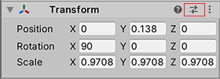

预设
Presets are assets that you can use to save and apply identical property settings across multiple components, assets, or Project Settings windows. You can also use Presets to specify default settings for new components and default import settings for assets in the Preset Manager The Preset Manager supports any importers, components, or scriptable objects you add to the Unity Editor.
You can only apply Presets in the Editor; Unity cannot apply them at run time. You can support Presets in your extensions to the Unity Editor.
Saving and applying Presets
Presets allow you to save the property configuration of a component, asset, or Project Settings window as a Preset asset. You can then use this Preset asset to apply the same settings to a different component, asset, or Project Settings window.
For example, you could edit the properties of a Rigidbody component, save these settings to a Preset asset, then apply that Preset asset to Rigidbody components in other GameObjects. The other components in the GameObjects are not affected; the Preset only applies its settings to the Rigidbody component.
可将预设存储在项目的 Assets 文件夹中。使用 Project 窗口可查看并选择要在 Inspector 中编辑的预设。
将属性设置保存到预设
To save property settings to a Preset asset, follow the instructions below. You can save property settings while in Edit mode or in Play mode.
- Select the GameObject, Asset import settings, or Project Settings window from which you want to reuse settings. When you select it, it appears in the Inspector window.
- In the Inspector window, configure the properties as you want to save them.
- Click the Preset selector (the slider icon) at the top-right of the Inspector window.
 - In the Select Preset window, click Save current to.

A File Save dialog appears.
5.选择新预设的位置，输入其名称，然后单击 Save。
Applying settings from a Preset
There are two ways to apply a Preset: the Select Preset window, or for component Presets, you can also drag and drop a Preset from the Project window onto the GameObject that contains that component.
注意：应用预设会将属性从预设复制到该项。此过程不会将预设链接到该项。对预设所做的更改不会影响先前已应用预设的项。
To apply a Preset via the Select Preset window:
For GameObjects or assets you want to apply a Preset to, select them so that they appear in the Inspector window. For Project Settings that you want to apply a Preset to, open them in the Project Settings window.
In the Inspector, click the Preset selector (the slider icon).
-
In the Select Preset window, search for and select the Preset to apply.
Unity applies this Preset to the component, asset, or Project Settings window.
4.关闭 Select Preset 窗口。
If you apply a component Preset via drag-and-drop, Unity’s behavior depends on the state of your GameObject:
- If you drop the Preset on an existing GameObject in the Hierarchy window, Unity adds a new component and copies properties from the Preset.
- If you drop the Preset on an empty area in the Hierarchy window, Unity creates a new, empty GameObject and adds a component with properties copied from the Preset.
- If you drop the Preset on the Inspector window onto the title of an existing component, Unity copies properties from the Preset.
- If you drop the Preset on an empty area in the Inspector window, Unity adds a new component and copies properties from the Preset.
Applying partial Presets
You can choose to only apply some properties from a Preset and exclude others. To do this:
Select your Preset in the Project window.
In the Inspector, right-click a property and choose Exclude Property. The window displays a red horizontal line next to excluded properties.

Apply the Preset to the target component, asset, or Project settings.
Note: To select all or clear all checkboxes in a Preset, select the More items menu (⋮) or right-click the Preset name, and select Include all properties or Exclude all properties. You can still adjust individual properties if you need to.
You can also use the Exclude option for Presets that you then set as the default configuration for components and asset importers. See Preset Manager for more details on how to do this.
编辑预设
To edit a Preset asset, select it from the Project window and view it in the Inspector window.
Note: When you change the properties in a Preset, your changes do not affect items you have already applied the Preset to. For example, if you apply a Preset for a Rigidbody component to a GameObject, and then edit the Preset, the settings in the Rigidbody component do not change.

Importing Assets using Presets by folder
You can use a script to apply a Preset to an Asset based on the location of the Asset in the Project window.
Exporting Preset Assets
预设可用于简化团队的工作流程。甚至可以使用预设来指定 Project Settings 窗口（包括 Preset 设置本身）的设置。可使用此功能配置某个项目，然后将其导出作为自定义资源包。团队成员可将此资源包导入其项目中。
- In the Project window, select the Presets you want to export .
- In the Unity menu, go to Assets > Export Package, or right-click inside the Project window and choose Export Package.
The Exporting package window displays the items to export. - If your Presets contain references to assets you want to include in the package, enable Include dependencies.
- Click Export.
- Choose where you want to store the package, enter a filename, and click Save. Unity saves the package as a .unitypackage file.
对动画状态节点的过渡使用预设
可保存和应用动画状态节点的预设。但是，预设中的过渡将在预设以及应用预设的节点之间共享。例如，可将预设应用于 Animator 窗口中的两个不同节点。在 Inspector 窗口中，编辑第一个节点中某个过渡的设置。所做的更改也会显示在另一个节点中和预设中。
2017–03–27页面已发布
New feature in 2018.1 NewIn20181